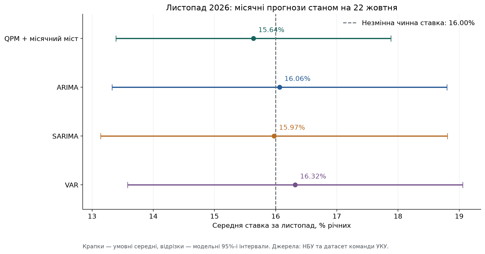
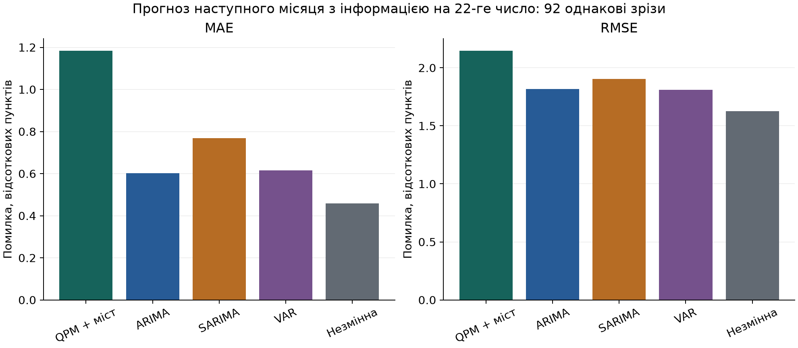

Інформаційна дата: 22 жовтня 2026. Ціль: середня ставка за всі 30 календарних днів листопада, % річних.
Це не середня ставка за IV квартал і не ставка на кінець місяця. Ціль уточнена користувачем 22.10.2026.
| Модель | Місяць | Середня ставка, % | Нижня 80% | Верхня 80% | Нижня 95% | Верхня 95% |
|---|---|---|---|---|---|---|
| QPM + місячний міст | 2026-11 | 15.64 | 14.17 | 17.11 | 13.39 | 17.88 |
| ARIMA | 2026-11 | 16.06 | 14.27 | 17.85 | 13.33 | 18.80 |
| SARIMA | 2026-11 | 15.97 | 14.12 | 17.83 | 13.14 | 18.81 |
| VAR | 2026-11 | 16.32 | 14.53 | 18.11 | 13.58 | 19.06 |

| Модель | Прогнозів | MAE, в. п. | RMSE, в. п. | Покриття 80%, частка | Покриття 95%, частка |
|---|---|---|---|---|---|
| VAR | 92 | 0.615 | 1.809 | 0.935 | 0.957 |
| ARIMA | 92 | 0.602 | 1.818 | 0.924 | 0.935 |
| SARIMA | 92 | 0.768 | 1.905 | 0.913 | 0.946 |
| QPM + місячний міст | 92 | 1.183 | 2.145 | 0.761 | 0.924 |
Орієнтир незмінної ставки: MAE 0,459 в. п.; RMSE 1,626 в. п. Він точніший за всі чотири моделі.

- QPM + місячний міст: 15.64%.
- ARIMA: 16.06%.
- SARIMA: 15.97%.
- VAR: 16.32%.
- Орієнтир «чинна ставка не зміниться»: 16.00%.
Ці неперервні числа є умовними математичними очікуваннями середньої ставки; вони не означають, що НБУ оголосить рішення з точністю до сотих відсотка.
На офіційній сторінці архіву НБУ під час перевірки 22 жовтня остання зміна — 16% з 18 вересня 2026 року.
Датований знімок: data/snapshots/2026-10-22/policy_archive.json. Джерело: https://bank.gov.ua/ua/monetary/archive-rish.
Завершена місячна макроісторія закінчується вереснем 2026. Відома ставка за 1–22 жовтня та остання чинна ставка використані окремо.
Середня ставка за ВЕСЬ жовтень ще невідома. Жодного майбутнього значення за 23–31 жовтня або за листопад не оголошено фактом.
Моделі спочатку будують спільний прогноз жовтня та листопада з історії до вересня. Потім прогноз умовлюється на відомих жовтневих даних.
Жовтневий ряд має статус current_month_nowcast, листопадовий — next_month_forecast. Для роботи з ціллю використовуйте next_month_forecast.csv.
Початковий шаблон НБУ квартальний. Його коефіцієнти не можна зробити місячними простим перейменуванням дат або діленням ставки на три.
Структурна QPM залишається квартальною; до неї додано явний стохастичний міст для розподілу квартального прогнозу на місяці.
Міст має випадкове блукання як попередню модель внутрішньоквартальної динаміки, а квартальне середнє — розподіл із QPM.
Ваги місяців пропорційні календарним дням. До додавання нових місячних спостережень зберігаються середнє й коваріація квартального прогнозу.
Після врахування відомих місячних ставок і поточного неповного місяця розподіл оновлюється. Це QPM + bridge, не нова оцінена місячна структурна QPM.
Макроісторія QPM закінчується попереднім повним кварталом; ВВП консервативно доступний ще на квартал раніше.
ARIMA оцінюється на місячній середній ставці. SARIMA має річний сезонний період 12 місяців, а не 4 квартали.
VAR використовує місячні зміни ставки НБУ, місячну інфляцію, зміни курсу та ставки ЄЦБ.
Квартальний ВВП не інтерполюється в удавані місячні спостереження. Ціни сезонно коригуються заново всередині кожного інформаційного зрізу.
Параметри статистичних моделей обираються лише за навчальною історією. Усі три моделі враховують неповний поточний місяць через спільний вимірювальний міст.
Два відомі показники — середня ставка за перші 22 дні й чинна ставка 22-го числа — є наближеними вимірюваннями ще невідомого повного місячного середнього.
Їхній історичний зсув, дисперсія помилки й взаємна кореляція оцінюються за завершеними попередніми місяцями. Для поточного прогнозу це 201 місяць.
Обидва показники застосовуються спільно через умовний нормальний розподіл, зі збереженням міжмісячної коваріації прогнозу.
Це статистична вимірювальна апроксимація. Вона не стверджує, що ставка залишиться незмінною до кінця жовтня, і не враховує повністю дискретний процес рішень НБУ.
Незалежність вимірювальних помилок від прогнозних інновацій є припущенням цього мосту; його якість перевіряється історично.
92 інформаційні дати: від 22 січня 2019 до 22 серпня 2026. Кожного разу прогнозується середня ставка НАСТУПНОГО місяця.
Усього 368 прогнозів, однакові дати для чотирьох моделей. Завершена навчальна історія закінчується попереднім місяцем; використано лише поточні дні до 22-го включно.
Цілі історичної перевірки: лютий 2019 — вересень 2026.
Незмінна ставка має MAE 0.459 в. п. і RMSE 1.626 в. п..
Вона краща за всі чотири моделі за обома метриками на загальній вибірці. Рейтинг попереднього квартального тесту не переноситься на місячну задачу.
Тому цей запуск не дає переконливого кількісного обґрунтування відхилення листопадового прогнозу від орієнтира близько 16%.
Модельні прогнози варто показувати як порівняння сценаріїв, а не обирати одну цифру лише через складність назви моделі.
Залишаються поточні переглянуті вінтажі даних та наближені дати доступності макростатистики; це не повний архівний real-time backtest.
Рівняння й калібровка QPM — із шаблону 2026 року, застосовані ретроспективно. Чутливість мосту й параметрів потребує подальшої перевірки.
Модельні інтервали є умовними Gaussian-інтервалами; їхня ширина не є гарантованою оцінкою ризиків війни або майбутніх рішень НБУ.
Календар засідань і дискретні кроки зміни ставки явно не моделюються.
Це прогноз очікуваної ставки, не висновок про оптимальне рішення монетарної політики.
```sh
python models/run_monthly.py
python models/make_monthly_report.py
python -m unittest discover -s tests -v
```
Окремо: models/monthly_qpm.py, monthly_arima.py, monthly_sarima.py, monthly_var.py.
Архівний квартальний запуск збережено без перезапису в results/2026-10-21/ та reports/2026-10-21/.